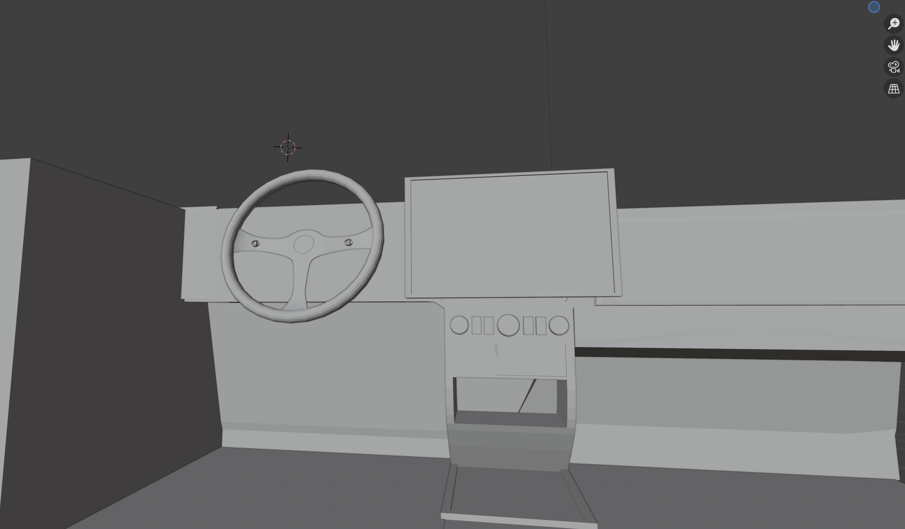

Rough Sketch

Sketching in Figma
Part 1
To get a quick start on my project, I found a car dashboard here that had potential to be molded into a new and improved Tesla Model 3 dashboard. I then began removing things such as the gear shift, patching up holes, and adjusting the location of the steering wheel.
Base for the New Dashboard
Part 2
Adding context, materials, and the screen. I found an HDRI on Polyhaven that looked pretty realistic here, so I downloaded that and found a quick refresher tutorial on how to rotate it around the car so the dashboard would be facing the road.
Context, Materials, Screen

Screen Development
Below are the initial on-screen concepts for the Tesla.

Final Render